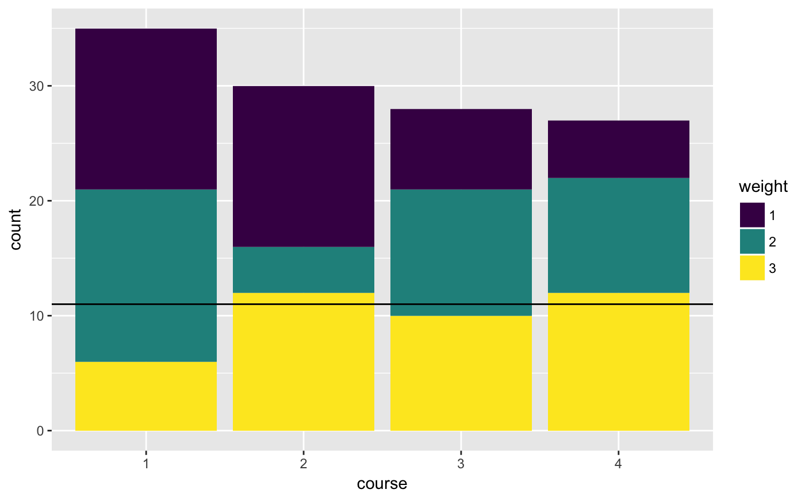
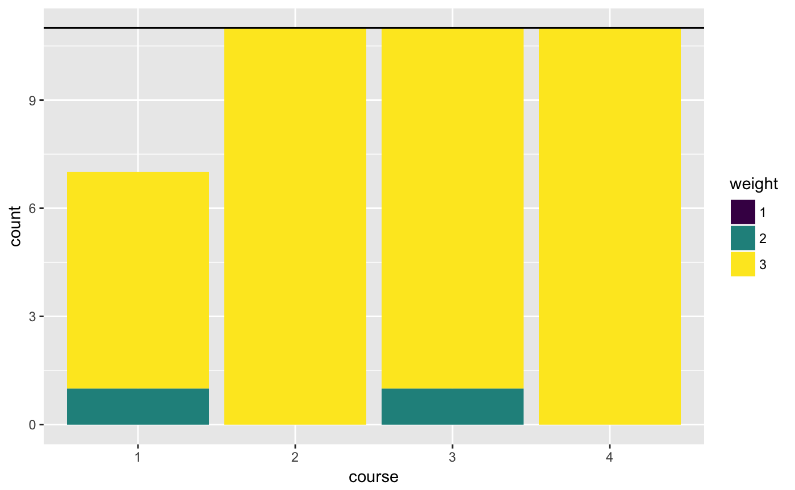

vignettes/problem-course-assignment.Rmd
problem-course-assignment.RmdIn this article we will look at assignment problems.
As a real world example problem we would like to match a group of students to a set of courses with the following constraints:
We have \(n\) students:
And \(m\) courses with equal capacity. The capacity can vary among courses though.
In addition, each student has three preferences. To model this we have a function that gives us three courses for each student. The first component has perference 1, second 2, and third 3:
set.seed(1234)
preference_data <- lapply(seq_len(n), function(x) sample(seq_len(m), 3))
preferences <- function(student) preference_data[[student]]## [1] 1 2 3The last component we need is a weight functions to make the model formulation easier. This function gives us the preference weighting for a course and student pair.
# the weight of a student choosing a course
# if the course is not among the preferences, the weight is -100000
weight <- function(student, course) {
p <- which(as.numeric(course) == preferences(as.numeric(student)))
as.integer(if (length(p) == 0) {
-100000
} else {
p
})
}Some examples:
## [1] 3## [1] -100000Let’s take a look at our random preferences. We plot the number of votes for each course grouped by the preference (1, 2, 3).
library(ggplot2)
library(purrr)
library(dplyr)
plot_data <- expand.grid(
course = seq_len(m),
weight = 1:3
) %>% rowwise() %>%
mutate(count = sum(map_int(seq_len(n), ~weight(.x, course) == weight))) %>%
mutate(course = factor(course), weight = factor(weight))## Warning in mutate_impl(.data, dots): Unequal factor levels: coercing to
## character## Warning in mutate_impl(.data, dots): binding character and factor vector,
## coercing into character vector
## Warning in mutate_impl(.data, dots): binding character and factor vector,
## coercing into character vector
## Warning in mutate_impl(.data, dots): binding character and factor vector,
## coercing into character vector
## Warning in mutate_impl(.data, dots): binding character and factor vector,
## coercing into character vector
## Warning in mutate_impl(.data, dots): binding character and factor vector,
## coercing into character vector
## Warning in mutate_impl(.data, dots): binding character and factor vector,
## coercing into character vector
## Warning in mutate_impl(.data, dots): binding character and factor vector,
## coercing into character vector
## Warning in mutate_impl(.data, dots): binding character and factor vector,
## coercing into character vector
## Warning in mutate_impl(.data, dots): binding character and factor vector,
## coercing into character vector
## Warning in mutate_impl(.data, dots): binding character and factor vector,
## coercing into character vector
## Warning in mutate_impl(.data, dots): binding character and factor vector,
## coercing into character vector
## Warning in mutate_impl(.data, dots): binding character and factor vector,
## coercing into character vector## Warning in mutate_impl(.data, dots): Unequal factor levels: coercing to
## character## Warning in mutate_impl(.data, dots): binding character and factor vector,
## coercing into character vector
## Warning in mutate_impl(.data, dots): binding character and factor vector,
## coercing into character vector
## Warning in mutate_impl(.data, dots): binding character and factor vector,
## coercing into character vector
## Warning in mutate_impl(.data, dots): binding character and factor vector,
## coercing into character vector
## Warning in mutate_impl(.data, dots): binding character and factor vector,
## coercing into character vector
## Warning in mutate_impl(.data, dots): binding character and factor vector,
## coercing into character vector
## Warning in mutate_impl(.data, dots): binding character and factor vector,
## coercing into character vector
## Warning in mutate_impl(.data, dots): binding character and factor vector,
## coercing into character vector
## Warning in mutate_impl(.data, dots): binding character and factor vector,
## coercing into character vectorggplot(plot_data, aes(x = course, y = count, fill = weight)) +
geom_bar(stat = "identity") +
viridis::scale_fill_viridis(discrete = TRUE) +
geom_hline(yintercept = 11)
The idea is to introduce a binary variable \(x_{i, j}\) that is \(1\) if student \(i\) is matched to course \(j\). As an objective we will try to satisfy preferences according to their weight. So assigning a student to a course with preference 3 gives 3 points and so forth. The model assumes, that the total capacity of the courses is enough for all students.
Here it is in mathematical notation:
\[ \begin{equation*} \begin{array}{ll@{}ll} \text{max} & \displaystyle\sum\limits_{i=1}^{n}\sum\limits_{j=1}^{m}weight_{i,j} \cdot x_{i, j} & &\\ \text{subject to}& \displaystyle\sum\limits_{i=1}^{n} x_{i, j} \leq capacity_j, & j=1 ,\ldots, m&\\ & \displaystyle\sum\limits_{j=1}^{m} x_{i, j} = 1, & i=1 ,\ldots, n&\\ & x_{i,j} \in \{0,1\}, &i=1 ,\ldots, n, & j=1 ,\ldots, m \end{array} \end{equation*} \]
Or directly in R:
library(ompr)
model <- MIPModel() %>%
# 1 iff student i is assigned to course m
add_variable(x[i, j], i = 1:n, j = 1:m, type = "binary") %>%
# maximize the preferences
set_objective(sum_expr(weight(i, j) * x[i, j], i = 1:n, j = 1:m)) %>%
# we cannot exceed the capacity of a course
add_constraint(sum_expr(x[i, j], i = 1:n) <= capacity[j], j = 1:m) %>%
# each student needs to be assigned to one course
add_constraint(sum_expr(x[i, j], j = 1:m) == 1, i = 1:n)
model## Mixed integer linear optimization problem
## Variables:
## Continuous: 0
## Integer: 0
## Binary: 160
## Model sense: maximize
## Constraints: 44We will use glpk to solve the above model.
library(ompr.roi)
library(ROI.plugin.glpk)
result <- solve_model(model, with_ROI(solver = "glpk", verbose = TRUE))## <SOLVER MSG> ----
## GLPK Simplex Optimizer, v4.63
## 44 rows, 160 columns, 320 non-zeros
## 0: obj = -0.000000000e+00 inf = 4.000e+01 (40)
## 43: obj = -1.299944000e+06 inf = 0.000e+00 (0)
## * 147: obj = 1.180000000e+02 inf = 0.000e+00 (0)
## OPTIMAL LP SOLUTION FOUND
## GLPK Integer Optimizer, v4.63
## 44 rows, 160 columns, 320 non-zeros
## 160 integer variables, all of which are binary
## Integer optimization begins...
## + 147: mip = not found yet <= +inf (1; 0)
## + 147: >>>>> 1.180000000e+02 <= 1.180000000e+02 0.0% (1; 0)
## + 147: mip = 1.180000000e+02 <= tree is empty 0.0% (0; 1)
## INTEGER OPTIMAL SOLUTION FOUND
## <!SOLVER MSG> ----We solved the problem with an objective value of 118.
matching <- result %>%
get_solution(x[i,j]) %>%
filter(value > .9) %>%
select(i, j) %>%
rowwise() %>%
mutate(weight = weight(as.numeric(i), as.numeric(j)),
preferences = paste0(preferences(as.numeric(i)), collapse = ",")) %>% ungroup## # A tibble: 6 x 4
## i j weight preferences
## <int> <int> <int> <chr>
## 1 5 1 3 2,3,1
## 2 10 1 3 4,3,1
## 3 15 1 3 2,4,1
## 4 16 1 3 3,4,1
## 5 23 1 3 2,4,1
## 6 26 1 3 3,2,1## # A tibble: 2 x 2
## weight count
## <int> <int>
## 1 2 2
## 2 3 3838 students got their top preference. 2 students were assigned to their second choice and 0 students got their least preferable course.
The course assignment now looks like this:
plot_data <- matching %>%
mutate(course = factor(j), weight = factor(weight, levels = c(1, 2, 3))) %>%
group_by(course, weight) %>%
summarise(count = n()) %>%
tidyr::complete(weight, fill = list(count = 0))
ggplot(plot_data, aes(x = course, y = count, fill = weight)) +
geom_bar(stat = "identity") +
viridis::scale_fill_viridis(discrete = TRUE) +
geom_hline(yintercept = 11)
Do you have any questions, ideas, comments? Or did you find a mistake? Let’s discuss on Github.